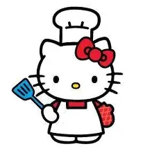

✏️ Cómo dibujar a Hello Kitty
Para dibujar a Hello Kitty de manera sencilla y divertida, sigue estos pasos:
- Dibuja un óvalo grande para la cabeza, ligeramente ancho.
- Agrega dos orejas triangulares en la parte superior.
- Dibuja los ojos como dos puntos negros y una nariz ovalada amarilla en el centro.
- Haz tres bigotes a cada lado de la cara.
- Dibuja el moño en la oreja izquierda: un círculo central y dos óvalos a los lados.
- Finalmente, agrega el cuerpo pequeño y los brazos cortos.
¡Y listo! Tendrás tu propio dibujo de Hello Kitty.

🍰 Cómo dividir un pastel
Si quieres compartir un pastel con tus amigos, hazlo de forma justa:
- Coloca el pastel en una mesa firme y segura.
- Con ayuda de un adulto, usa un cuchillo adecuado.
- Primero corta el pastel en dos mitades iguales.
- Después corta cada mitad en dos, formando 4 partes.
- Si hay más personas, divide cada parte en mitades hasta obtener suficientes porciones.
- Procura que todas las porciones tengan un tamaño similar.
Así todos podrán disfrutar juntos sin que nadie se quede sin su pedazo.

🧁 Cómo hacer un mini pastel
Con ayuda de un adulto, prepara tu mini pastel siguiendo estos pasos:
- Mezcla en un bowl: harina, azúcar, huevo y mantequilla.
- Agrega un poco de leche y esencia de vainilla para darle sabor.
- Coloca la mezcla en un molde pequeño previamente engrasado.
- Hornea a 180°C durante 15-20 minutos hasta que esté dorado.
- Deja enfriar y decora con crema batida y fresas.
¡Tu mini pastel estará listo para disfrutar en compañía!
